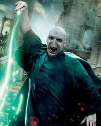

Lord Voldemort (/ˈvoʊldəmɔːr/,[1][2] /-mɔːrt/ in the films; born Tom Marvolo Riddle) is a fictional character and the main antagonist in J. K. Rowling's series of Harry Potter novels. Voldemort first appeared in Harry Potter and the Philosopher's Stone, which was released in 1997. Voldemort appears either in person or in flashbacks in each book and its film adaptation in the series, except the third, Harry Potter and the Prisoner of Azkaban, where he is only mentioned.
